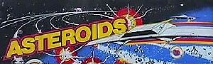

|

| ||||||||||||||||||||
|
Asteroids in JavaScript
Original game by Atari Inc. in 1979.
Exact port of the original to JavaScript
using the method of static binary translation
in October 2005 and in June 2014 by Norbert Kehrer.
Read more about it on my homepage at
http://members.aon.at/~nkehrer/
Keys to play: |